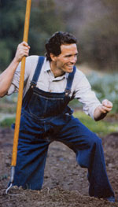
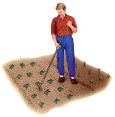

Enjoy a weed-free garden by using these four simple techniques and two special hoes.
Weeds probably discourage more potential gardeners than any other single problem. "Oh, the garden was overgrown with weeds and we finally gave up" is a common explanation of many frustrated gardeners, but it doesn't need to be that way. Have you ever heard anyone say, "Oh, the living room finally got so dusty that we just stopped using it"? We don't stop enjoying the living room because of dust. We simply vacuum or sweep every so often to keep the room clean. It's the same for your garden: Regularly cleaning your garden by weeding is one of the keys to keeping your crops productive and your enthusiasm strong. Here are the top weed-prevention strategies, plus the two best weeding hoes.
First, don't dig the garden. Plowing or deep tilling buries weed seeds, then brings them back up. Let buried seeds stay buried. Most weed seeds germinate only in the top two inches of soil.
Don't let weeds go to seed. Nature is prolific. Each plant can produce an enormous number of seeds. The old saying "One year's seeding means seven years' weeding" holds. The results of this carelessness are cumulative: The more seeds you have, the more weeds you have. But the results of care also are cumulative: If weed plants are removed from the garden and placed in the compost heap before they go to, seed, their thousands of seeds won't be added to the garden. No seeds, no weeds. And, as the years progress, fewer and fewer seeds will be left in the garden to germinate.
Till twice before you sow. Before you plant a new garden, till the soil shallowly to encourage weed seeds to sprout, then water the area if the soil is dry. The combination of air, moisture and exposure to light will stimulate weed-seed germination. Wait a week after tilling and then hoe or till again to eradicate all the newly germinated weed seedlings before you plant. The more times you repeat this pre-plant weed-reduction technique, the fewer dormant weed seeds you will have lurking in your garden beds. Once the upper-layer weed seeds are exhausted (it takes a number of years, so be patient), very few new weeds will appear unless you bring them up from below or let weeds mature and drop new seeds.
Dispatch weeds while they are small. Tiny, newly germinated weeds are the easiest to kill. A sharp hoe drawn shallowly through the soil between the crop rows will quickly dispatch small weeds. Cultivating is the gentle stirring of the soil's surface to uproot newly germinated weeds before they become a problem. That minimum effort yields a maximum benefit, curing the weed problem, while making a tidy garden. And a well-kept garden may motivate you to spend more caretaking time there.
For cultivating, an effective hoe is sharp; angled for drawing, not chopping; slim, so as not to bulldoze soil onto the vegetable plants; and accurate, so as to pass between the crop rows without damage. It also must be comfortable and fun to use, or you will find some other way to spend your time. Years ago I could never find such a hoe, so I made my own. Today you can buy this tool, which I call the collineal (which means "in the same straight line") hoe. Various interpretations of this design are sold by a number of garden tool catalogs (see "Special Offer," Page 45). It is designed for skimming in soft, fertile soil rather than for chopping compacted earth.
For my collineal hoe, I wanted an efficiently designed tool, not a crude blud geon. I also wanted a hoe I could use standing upright, to minimize back strain. Since that meant I would be holding it with my thumbs up the handle, as with a broom or leaf rake, I had to find the ideal angle between the blade and the handle for a shallow, skimming action. Seventy degrees turned out to be ideal. I made the blade as thin and narrow as possible so that it would cut and skim without gouging and bulldozing. Because the blade was narrow, the cutting edge could line up with the centerline of the hoe handle, ensuring an accurate aim in cutting weeds rather than crops. Finally, I sharpened the blade like a razor, so the cutting edge would be right next to the soil. A sharp hoe allows you to work shallowly and not disturb the roots of the crop plants.
Using this collineal hoe with the proper angle and a thin, sharp blade is like dancing with a skilled partner, and just as enjoyable. Hold it in a ballroom-dancing position, with your thumbs upward. Stand comfortably with your back straight. The hoe blade draws effortlessly through the soil of the growing areas. Hoe when weeds are very small, gently cultivating the soil's surface. Go out to the garden on a summer's evening, put a Strauss waltz on the stereo and dance with your hoe. Weed control has never been so civilized.
The only compaction in your garden should be in the paths. For those areas, a stirrup hoe, with its thin double-edged stirrup blade, will make your life easier. The stirrup is hinged where it attaches to the handle so it swings back and forth slightly, and the hinged action changes the angle of the blade to the soil so that it cuts smoothly, whether you are pushing or pulling. This hoe is held with the thumbs pointing down the handle so that a lot of power can be applied. It can cut effectively just below the soil's surface or go deeper if you wish. The cutting blade fits nicely in the paths between the beds where your feet have passed. We use this hoe while moving down the paths backward, working the hinged action of the hoe back and forth in the compacted soil. It neatly cuts off all weeds and leaves a fresh, aerated surface.
If you use the collineal and stirrup hoes just a few minutes each time you visit your garden, you'll easily solve gardening's greatest challenge and keep your crops weed-free and your garden a place you'll enjoy.
Mother Earth News
|
 The thin, angled blade of the collineal hoe lets you easily sweep away weeds. |
 |
|